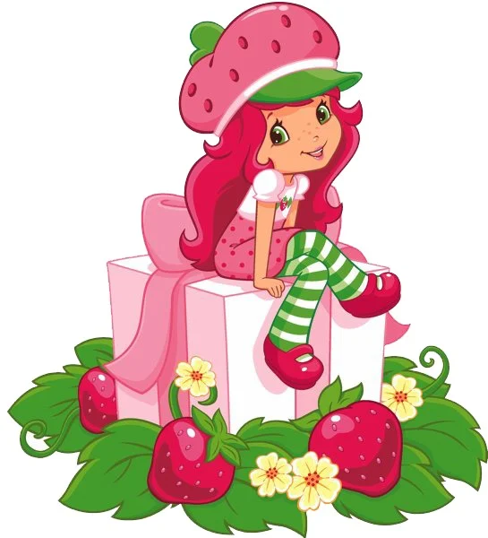

🍓 Introdução 🍓 – Quem é a Moranguinho?
Moranguinho (em inglês, Strawberry Shortcake) é uma personagem adorável criada originalmente pela empresa American Greetings no final dos anos 1970. Ela é uma menina doce, otimista e carismática, que vive em um mundo encantado repleto de frutas e aromas, chamado Morangolândia (ou Strawberryland, na versão original). Com seu icônico chapéu vermelho de morango, Moranguinho conquistou o coração de crianças ao redor do mundo através de desenhos animados, brinquedos e livros.
História
A personagem Moranguinho surgiu no final dos anos 1970 como uma ilustração para cartões de felicitação da empresa American Greetings. O sucesso da personagem foi tão grande que logo ela ganhou sua própria linha de bonecas perfumadas, que se tornaram febre nos anos 80. Com o passar das décadas, Moranguinho foi adaptada para séries animadas, filmes e reboots — sempre acompanhando as tendências visuais e culturais das novas gerações. Seu mundo, a Morangolândia, é um lugar encantado onde todas as personagens têm nomes e personalidades inspiradas em frutas e sobremesas. O foco das histórias sempre foi promover valores como amizade, solidariedade e alegria, com aventuras leves e educativas.
🖼️Criação: Surgiu como uma ilustração em cartões de felicitações e rapidamente se transformou em uma franquia multimídia.
🧵Evolução: Ao longo dos anos, passou por diversas reformulações visuais e de estilo, acompanhando as gerações.
🌈Enredo principal: Moranguinho vive aventuras com seus amigos, sempre promovendo valores como amizade, empatia e colaboração.
Habilidades
👑Liderança: Moranguinho costuma liderar seus amigos com empatia e sabedoria.
🍰Culinária: Ama fazer tortas, bolos e outras delícias com frutas, especialmente morangos.
🎨Criatividade: Tem talento para resolver problemas com ideias criativas e divertidas.
💖Empatia: Consegue ouvir e entender os sentimentos dos outros, sempre disposta a ajudar.
Características
👗 Aparência marcante: cabelo vermelho-rosado, pele clara, roupas coloridas (geralmente com tons de rosa e verde) e um chapéu em forma de morango.
🌞 Personalidade: doce, otimista, carinhosa, proativa e sempre pronta para ajudar.
🐾 Animais de estimação: tem dois pets fiéis — o gato Creme de Leite (Custard) e o cachorro Pudim (Pupcake), que acompanham suas aventuras.
🤝 Amizades fortes: vive cercada por amigas como Laranjinha, Blueberry Muffin, Framboesinha e outras, cada uma com seus próprios talentos e estilos.
Curiosidades
🍓Cheiro característico: os brinquedos clássicos de Moranguinho vinham perfumados com cheiros de frutas, sendo um diferencial marcante da linha.
🔄Diversas versões: a personagem foi redesenhada ao longo dos anos — de um estilo mais infantil nos anos 80 a uma estética adolescente e moderna em versões mais recentes.
🌍Presença internacional: embora criada nos EUA, Moranguinho conquistou fãs em diversos países, inclusive no Brasil, com dublagens locais e adaptações culturais.
🛍️Linha de produtos ampla: além dos desenhos e brinquedos, Moranguinho já apareceu em livros, roupas, materiais escolares, videogames e aplicativos educativos.
🌱Temas atuais: nas versões mais novas, Moranguinho e suas amigas abordam temas como sustentabilidade, trabalho em equipe, autoestima e diversidade.